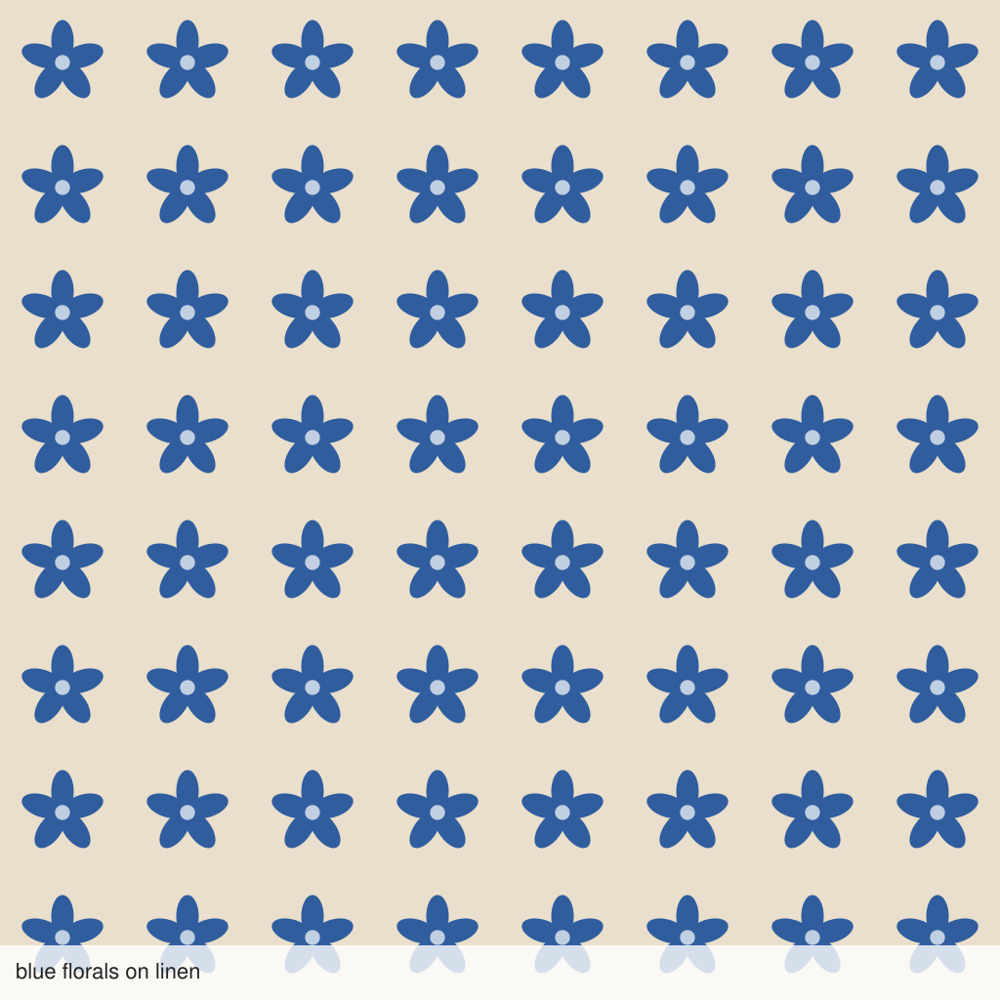

Odette Atelier1,284 sales · ★ 4.9 (312 reviews)
Blue floral linen scarf
Ships from Lyon, France · Ships in 2 weeks · Final sale, made to order
Maker: Odette
A featherweight scarf printed with small blue florals on a natural linen ground, finished by hand.
Made to order
Questions about this item
Yes, approve one at the listed price. The studio completes every order as its 50-piece case at checkout, so the case is what ships and what is charged.
No, that sample is retired. All orders print in large red roses on black.
No. Approve the single scarf as shown; the case quantity and the current print are applied at checkout.
Reviews
Lovely drape and it arrived beautifully wrapped. The studio answered my questions within the hour.
A gift for my sister, who wore it to dinner the same night. Read the Q&A before you order, it explains the case.
Light enough for summer and the linen ground feels natural. The red roses print photographs beautifully.